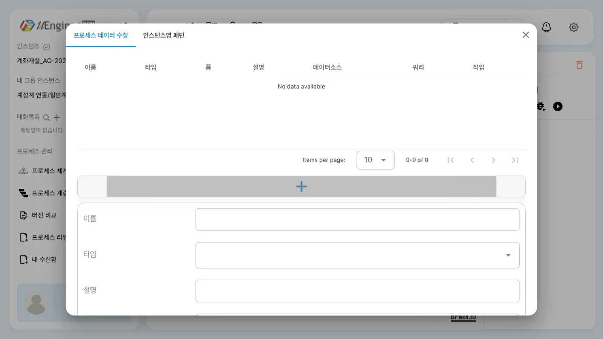
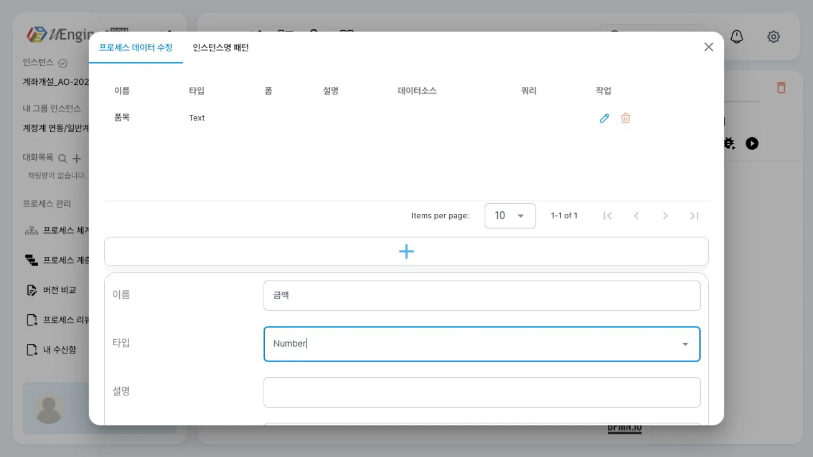
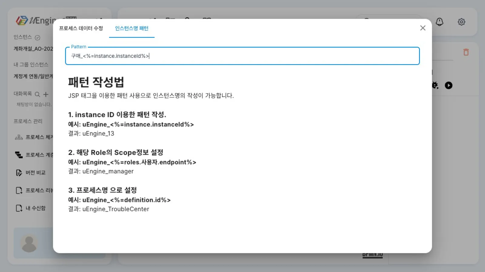
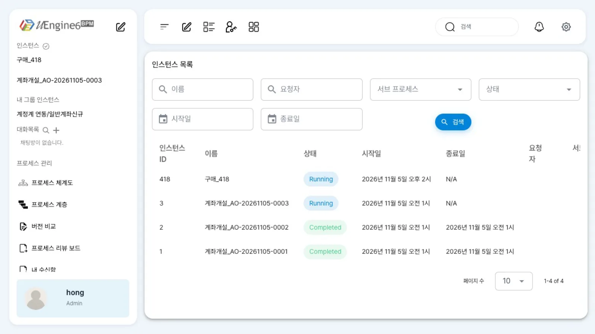

「구매 결재」 정의에 프로세스 변수 「품목」(Text)·「금액」(Number)을 만듭니다. 인스턴스 이름 패턴을
구매_<%=instance.instanceId%>로 정한 뒤, 실행한 인스턴스의 이름이구매_<번호>로 붙는 것까지 확인합니다.
무엇을 · 왜#
프로세스 변수(process variable)는 인스턴스 하나가 끝날 때까지 유지하는 값입니다. 게이트웨이 조건, 다음 작업의 값 미리 채우기, 외부 시스템 호출의 입력에 모두 프로세스 변수를 씁니다(Camunda의 process variable과 같습니다). uEngine6에서는 정의에 변수를 선언합니다.
| 개념 | 정의(XML) | 실행 중(API) |
|---|---|---|
| 프로세스 변수 | <uengine:variable name="품목" type="Text" json="{…}"/> (bpmn:process의 uengine:properties 안) |
GET /instance/{id}/variables의 키 :품목(값이 있을 때) |
| 인스턴스명 패턴 | uengine:json의 "instanceNamePattern":"구매_<%=instance.instanceId%>" |
인스턴스 name |
- 변수 타입은 「Text」·「Number」·「Date」·「Attachment」·「Form」입니다.
- 작업 화면에 넣은 값(아규먼트)은 데이터 매핑을 해야 변수에 들어갑니다. 이 장에서는 변수 선언과 이름 패턴 설정까지 다루고, 매핑은 작업 입력값과 데이터 매핑에서 합니다.
- 인스턴스명 패턴이 없으면 인스턴스 이름은
<정의 이름>__<날짜>(예:구매 결재__2026-11-05)입니다. 패턴은 JSP 태그처럼<%= … %>안의 식을 계산해 이름을 만듭니다. 패턴 탭의 「패턴 작성법」은instance.instanceId(인스턴스 번호),roles.<역할>.endpoint(그 역할의 담당자),definition.id(정의 아이디) 세 가지 예를 보여 줍니다. 이 장에서 실제로 확인한 것은instance.instanceId입니다.
따라 하기#
첫 프로세스의 「구매 결재」 사본 튜토리얼/데이터/구매결재로 실습합니다.
- 편집 모드로 엽니다.
/definitions/튜토리얼/데이터/구매결재를 열고 연필을 누릅니다. - 프로세스 변수 대화상자를 엽니다. 캔버스 위 도구 막대의 「프로세스 변수」(x)를 누르면 「프로세스 데이터 수정」·「인스턴스명 패턴」 탭이 있는 대화상자가 뜹니다.

프로세스 변수 대화상자 - 변수 두 개를 추가합니다. 「+」를 누르고 이름에
품목을 입력합니다. 타입은 「Text」를 고른 뒤 「추가」를 누릅니다. 다시 「+」를 눌러 이름은금액, 타입은 「Number」로 추가합니다. 「+」는 누를 때마다 입력 칸을 열고 닫으므로, 변수 하나를 추가할 때마다 한 번씩 누릅니다.
변수 추가(품목을 추가한 뒤 금액 입력 중) - 인스턴스명 패턴을 적습니다. 「인스턴스명 패턴」 탭의 「Pattern」 칸에
구매_<%=instance.instanceId%>를 적고 대화상자를 닫습니다. 칸 아래에 「패턴 작성법」 예시가 있습니다.
인스턴스명 패턴 - 정의를 저장합니다. 디스켓을 누른 뒤 「저장」을 누릅니다. 변수와 패턴이 정의 XML에 함께 저장됩니다(같은 버전 덮어쓰기).
- 실행해 이름을 확인합니다. 「실행」을 눌러 「구매 요청」의 「품목」·「금액」에 각각
복합기 1대,890000을 입력하고 「완료」를 누릅니다. 관리자 화면(/admin)의 「인스턴스 목록」에서 새 인스턴스 418의 이름은구매_418입니다. 인스턴스를 열면 「프로세스 변수」 탭은 비어 있습니다. 변수를 선언만 했고 값은 넣지 않았기 때문입니다.
인스턴스 이름
설정 레퍼런스#
대화상자 칸과 정의#
| 화면 | 정의 |
|---|---|
| 「프로세스 데이터 수정」의 이름 · 타입 | <uengine:variable name="…" type="Text\|Number\|Date\|Attachment\|Form"> |
| 「인스턴스명 패턴」 | uengine:json의 instanceNamePattern |
저장된 정의(발췌)#
영상에서 저장한 튜토리얼/데이터/구매결재.bpmn의 앞부분입니다. 변수는 bpmn:process의 uengine:properties 안에 uengine:variable로, 패턴은 uengine:json에 들어갑니다.
<bpmn:process id="Process_1" name="구매 결재" isExecutable="true">
<bpmn:extensionElements>
<uengine:properties>
<uengine:variable json="{"defaultValue":""}" name="품목" type="Text"/>
<uengine:variable json="{"defaultValue":""}" name="금액" type="Number"/>
<uengine:json>{"definitionName":"구매 결재","version":"0.1","shortDescription":{"text":""},"instanceNamePattern":"구매_<%=instance.instanceId%>"}</uengine:json>
</uengine:properties>
</bpmn:extensionElements>
…
API로 변수 읽고 쓰기#
# 쓰기 — 값은 JSON (문자열은 따옴표까지)
curl -s -X POST "http://localhost:8288/instance/<번호>/variable/$(jq -rn --arg v 품목 '$v|@uri')" \
-H "Authorization: Bearer $TOKEN" -H 'Content-Type: application/json;charset=UTF-8' -d '"모니터 2대"'
# 읽기 — 값이 있는 프로세스 변수가 키 ":이름" 으로 나옵니다
curl -s http://localhost:8288/instance/<번호>/variables -H "Authorization: Bearer $TOKEN" | jq '.[":품목"]'
영상의 인스턴스(구매_418)는 변수를 선언만 하고 값을 넣지 않았으므로, /variables에 품목·금액 키가 없었고 관리자 화면의 「프로세스 변수」 탭도 「No data available」이었습니다. 값을 쓰면 ":품목" 키로 나옵니다(API로 같은 일 하기에서 ":메모"로 확인). 이름이 한글인 변수를 단건(GET /instance/<번호>/variable/품목)으로 읽으면 글자가 깨지므로 /variables를 쓰세요(REST API 레퍼런스). 실행 중 값을 화면에서 고치는 방법은 실행 중 변수 고치기에 있습니다.
알려진 제약#
| 증상 | 우회 |
|---|---|
| 「+」를 누를 때마다 입력 칸이 열리거나 닫힘 | 변수 하나를 추가할 때마다 「+」를 한 번 누릅니다 |
| 아규먼트로 넣은 값이 변수에 들어가지 않음(관리자 화면 「프로세스 변수」 탭이 비어 있음) | 데이터 매핑이 필요합니다 — 작업 입력값과 데이터 매핑 |
GET /instance/{id}/variable/{한글}이 깨짐 |
GET /instance/{id}/variables |
확인 문제#
패턴을 정하지 않으면 인스턴스 이름은 무엇이 되나요?
<정의 이름>__<날짜>입니다. 예: 구매 결재__2026-11-05.
실행 창에서 「품목」에 값을 넣었는데 변수 「품목」이 비어 있습니다. 왜인가요?
실행 창의 「품목」은 작업의 아규먼트이고, 프로세스 변수 「품목」과는 다른 칸입니다. 작업의 「데이터 매핑」으로 아규먼트를 변수에 연결해야 값이 들어갑니다.
API로 읽은 변수의 키가 `:품목`처럼 앞에 `:`가 붙는 까닭은 무엇인가요?
/variables는 엔진이 인스턴스에 담은 값을 모두 반환합니다. 프로세스 변수는 : 뒤에 이름이 오고(값이 있을 때만), UserTask_1:_status:prop처럼 가운데에 :가 있는 키는 엔진 내부 상태입니다.